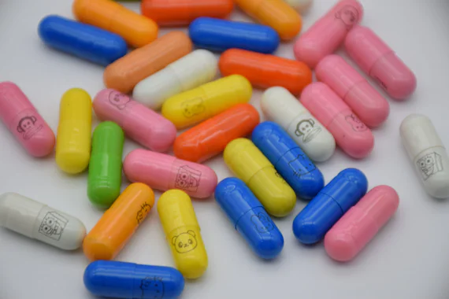

Este acertijo requiere pensar lateralmente sobre cómo dividir cantidades de forma equitativa sin depender de la vista.
La Solución:
El ciego debe partir las cuatro píldoras por la mitad. Al hacerlo, tendrá ocho mitades: cuatro mitades de color rojo y cuatro mitades de color azul.
Luego, debe separar una mitad de cada píldora en un grupo (cuatro mitades) y las otras cuatro mitades en otro grupo.
Al tomar las cuatro mitades del primer grupo, estará ingiriendo exactamente dos mitades de cada píldora original. Como había dos rojas y dos azules, habrá tomado: